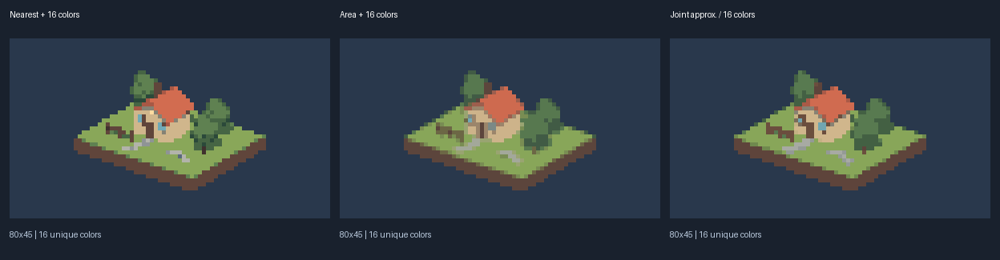
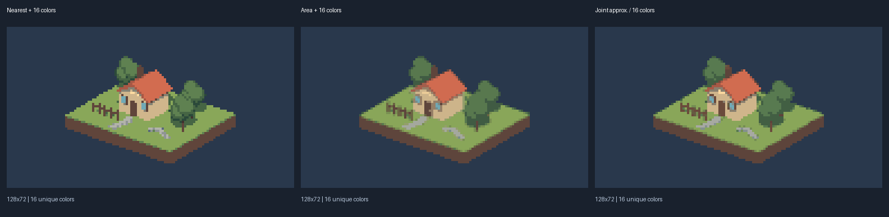
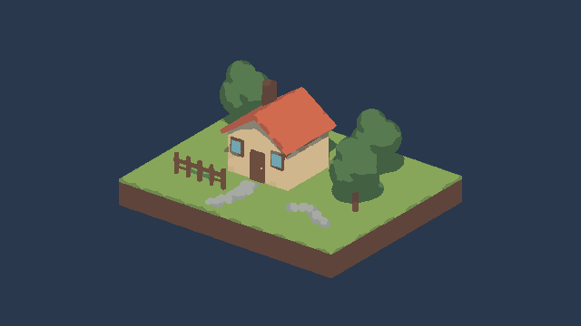

同一场景。左：最近邻缩小 + 16 色；中：面积缩小 + 16 色；右：区域与色板联合优化近似（16 色）。三种方法具有相同颜色预算，各自学习调色板。当前近似采用 k-means，未复现论文的 MCDA 和双边滤波，不代表论文完整结果，也不保证优于基线。不限制颜色的最近邻图另存为 Unrestricted.png。


此图显示高分辨率输入的区域分配，非最终像素网格。

静态实验，无帧间稳定性约束。用门窗、树干、屋顶与栅栏检查结构；没有人物样本，不能据此得出人物识别结论。